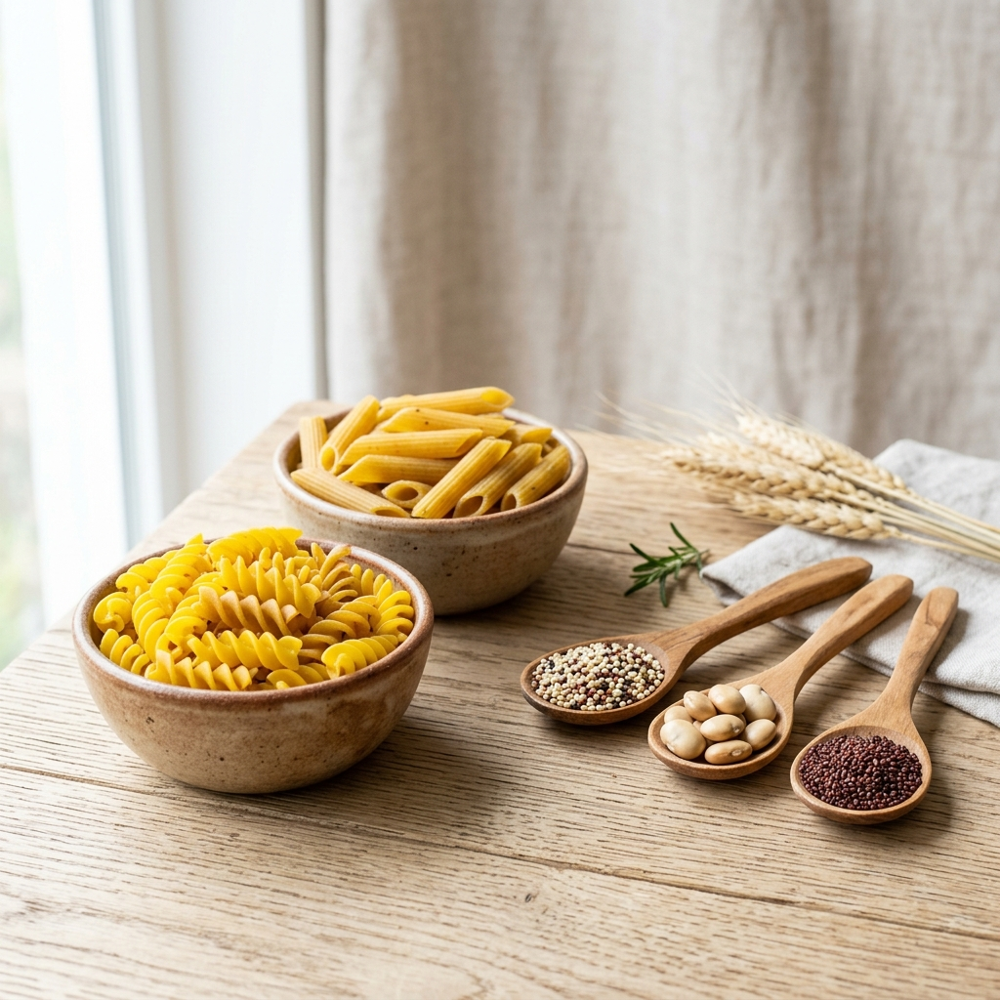
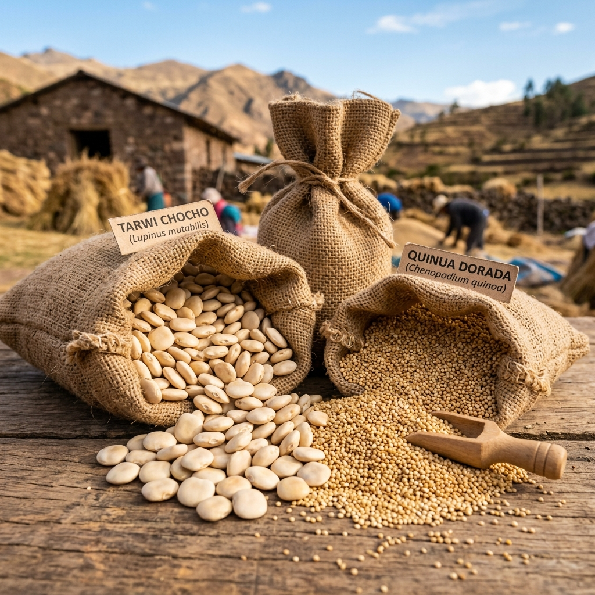
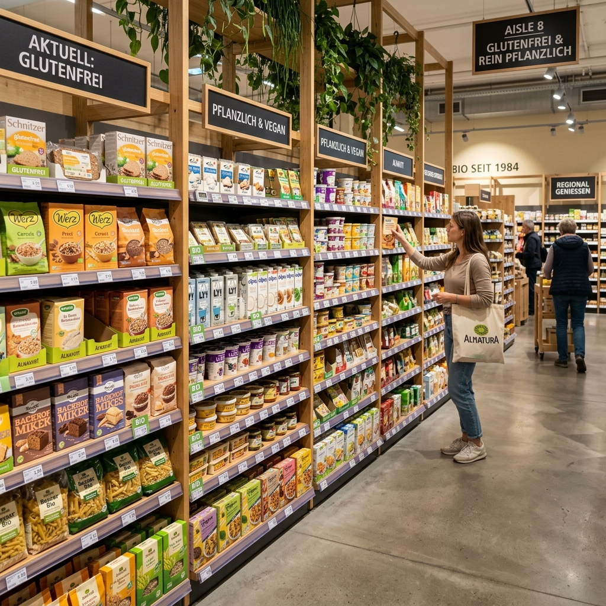

Informe Ejecutivo de Exportación al Mercado Alemán (Unión Europea)
Profesor: Prof. Rafael Benzaquen
Pastas alimenticias secas (fusilli y penne) Gluten-Free formuladas a base de súper-granos andinos: Tarwi (Chocho), Quinua y Cañihua. Diseñadas para responder a la creciente demanda europea por proteína limpia no derivada de la soya ni del trigo.

| Característica | Descripción |
|---|---|
| Partida NANDINA | 1902.19.00.00 (Pastas Secas) |
| Ingrediente Base | Tarwi (44% proteína), Quinua, Cañihua |
| Atributo Principal | Gluten-Free Certificado (< 20 ppm) |
| Ventajas de Salud | Bajo índice glucémico, OGM-Free, Rico en fibra |
Exportar materias primas a granel expone al productor a la volatilidad de precios internacionales (~1.8 a 2.4 USD/kg para la quinua).
Transformar estos granos en pastas empacadas de consumo masivo (CPG) duplica el valor FOB exportado (5.50 a 6.20 USD/kg), lo cual incrementa el margen de beneficio en más de 120%.
El tarwi destaca por su extraordinario perfil nutricional: contiene 44% de proteína vegetal y grasas saludables. No posee alérgenos tradicionales y es OGM-Free, sustituyendo con ventaja a la soya transgénica en Europa.

Los granos andinos se cultivan bajo agricultura regenerativa en Cusco, Junín y Puno.
El tarwi actúa como fijador natural de nitrógeno en los suelos, reduciendo el uso de fertilizantes sintéticos y fortaleciendo el ecosistema.
Hub Logístico: Puerto de Rótterdam (Países Bajos) actúa como punto de entrada marítimo, permitiendo distribución terrestre hacia Alemania y Europa del Norte.

Acuerdo Comercial Perú - Unión Europea (vigente desde marzo de 2013).
Este acuerdo bilateral otorga desgravación arancelaria total a los productos agroindustriales peruanos procesados. Para acogerse a este beneficio, el exportador peruano debe emitir el Certificado de Origen (Formato EUR.1).
| Tipo de Barrera | Normativa / Entidad | Exigencia Principal |
|---|---|---|
| Sanitarias (MSF) | Autoridad Europea EFSA Reglamento (CE) N° 1881/2006 |
Control estricto de Límites Máximos de Residuos (LMR), control de micotoxinas y proceso de desamargado completo del tarwi para eliminar alcaloides tóxicos (esparteína). |
| Técnicas (OTC) | Reglamento UE N° 828/2014 Leyes de Etiquetado Alemán |
Para utilizar el sello "Gluten-Free" se exige un límite máximo < 20 ppm. Es obligatorio el sistema semáforo Nutri-Score y el etiquetado traducido al idioma alemán (Deutsch). |
| Certificaciones | Retailers y Consumidor (Aldi, Rewe, Edeka) |
Obligatorio sello oficial orgánico europeo EU Organic (Euro Hoja). Alta preferencia por certificaciones de inocuidad (BRCGS/IFS Food) y sello vegano (V-Label). |